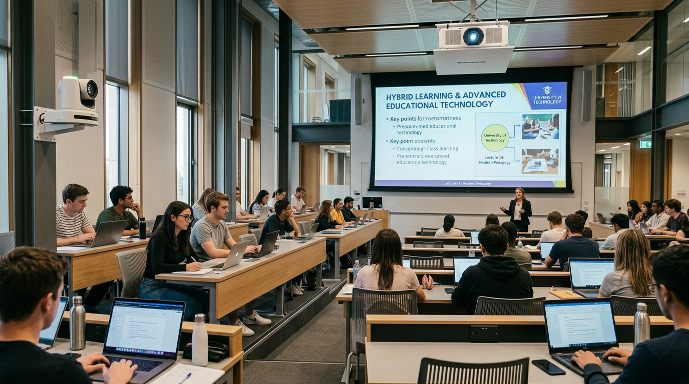

[SYS.ADMIN.DOC // S09.OPERATIONS]
+ DUAL_OPS: DESK FOCUS & FIELD VERIFICATION
Deign Lazaro
/ Primary Narrator
⚡
RAPID DESK TRIAGE
🎙️
PREEMPTIVE ROOM READINESS
CHAPTER 06 // DAILY RHYTHMS
A DAY IN THE LIFE: DESK WORK & HYBRID ROOMS
DESK PERSPECTIVE
MULTI-TASKING
Central Operations
•
WordPress Ops
•
Graphic Design
•
Google Admin
•
Colleague IT Support
IDE_TERMINAL // WORKFLOW
Sustaining digital workflows, scheduling conferences, and managing queries.
CAMPUS MOBILITY
PREEMPTIVE
Hybrid Classrooms
PTZ Room Camera
ONLINE (1080p60)
Ceiling Mic Array
CALIBRATED
Presentation Screen
HDMI SYNC
Remote Participants
CONNECTED

ROOM_AV // PTZ_SYNC
Checking equipment before classes begin — resolving issues before they occur.
PROACTIVE
Classroom Inspections
HYBRID
Local & Remote Links
0 GLITCHES
Preventive Goal